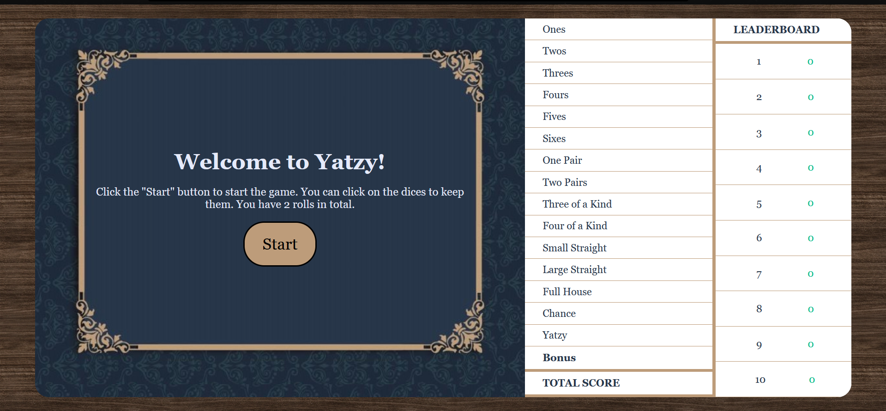
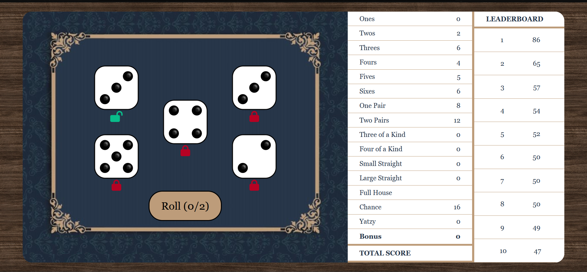

Projects
Yatzy Game


Yatzy is a simple website using HTML, CSS, JavaScript (React.js) and PHP to allow a user to play the traditional Yatzy dice game on a browser
-
How to Play:
- Objective: The objective of Yatzy is to score the most points by rolling five dice and making specific combinations. The player rolls the dice and chooses the best combinations to score in different categories.
- Rules:
- Rolls per Turn: The player gets up to three rolls per turn.
- Dice Keeping: After each roll, the player can choose to keep or re-roll any combination of the five dice.
- Scoring Categories: At the end of each turn, the player must select one of the scoring categories for that turn. The game ends after 15 rounds when all categories have been filled.
-
Features:
- User-Friendly Interface: Intuitive design for easy gameplay.
- Responsive Design: Adapts to different screen sizes for a smooth experience on any desktop/laptop of the user's choice.
- Score Tracking: Automatically calculates and updates scores for each category and leaderboard.
-
Implementation:
- Technology Stack: HTML, CSS, JavaScript (React.js), PHP
- React Components: The website is built using React components.
- Design System: Documented the design system for the Yatzy game website.
- State Management: The game state is managed using the PHP session and key variables.
Hospital Triage


The Hospital Triage website is a React.js, PHP and MySQL application designed to help both patients and hospital staff manage emergency room wait times more effectively.
-
Key Features:
- Allows patients to sign in and check their approximate wait times
- Admin functionality to add, edit, and delete patient data
- Provides a responsive design for user-friendly experience on various devices
-
Architecture:
- Uses React.js for front-end development and PHP for backend processing
- Integrates with a MySQL database hosted on Amazon RDS
- Ensures secure data handling and session management using PHP sessions
-
Components:
- LandingPage Component: Manages the patient sign-in and admin login processed
- AdminPage Component: Displays a list of patients and allows admin users to manage patient data
- PatientPage Component: Displays patient information and various hospital resources
-
Implementation:
- Technology Stack: HTML, CSS, JavaScript (React.js), PHP, MySQL
- React Components: The website is built using React components.
- Design System: Documented the design system for the Hospital Triage website.
- State Management: The admin and patient information is managed using the PHP session and stored in the database.
Contact
For further information, please contact me at: